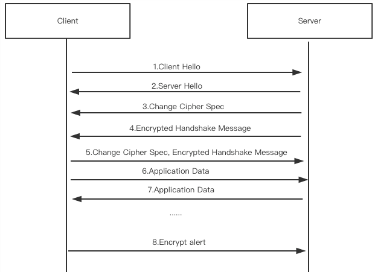
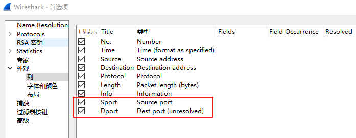

Capture Package 抓包
常用测试软件
- wireshark: 常用图形化抓包软件
- charles: MasOS上常用的抓包软件
- tcpdump: Linux命令行常用抓包软件
- tshark: Wireshark网络分析工具的命令行版本，用于分析捕获的网络数据包。Kali默认安装.
Wireshark抓https明文包
1.在系统配置环境变量 SSLKEYLOGFILE，比如设置 SSLKEYLOGFILE=C:\Users\xxxx.ssh\keys.log （Chrome会自行创建改文件，如果没有就手动创建，该文件存储ssl握手时的pre-master信息）。
2.打开Wireshark，编辑 -> 首选项（Ctrl+Shift+P）-> Protocols -> TLS，在 （Pre）-Master-Secret log filename中，填入上面设置的路径C:\Users\xxxx\.ssh\keys.log，重启Wireshark。
3.重新启动浏览器，使用Chrome或者Firefox，这两种浏览器会去查找环境变量SSLKEYLOGFILE，并将SSL的KEY写入文件当中去。
4.启动Wireshark的监听，用浏览器访问https服务，可发现Wireshark抓到的不再只是加密的TLS包，也有明文的https的请求信息（过滤ssl，点击HTTP中的Hypertext Transfer Protocol可以看到解密后的明文内容）。
为什么默认设置的Wireshark无法解密HTTPS数据
先了解https通信中client和server基本交互流程

- SSL Encrypted Alert消息，因为是加密的内容，所以单从 Wireshark 看不出警报的内容。
- 但因为警报消息经常只是客户端用来提示服务端 SSL 传输结束，所以有时它只是 SSL 传输结束的一个信号。
- 发出了 Encrypted Alert后客户端数据传输完毕，准备进入四次挥手断开 TCP 连接。
密钥交换算法
密钥交换算法目前常用的有RSA和Diffie-Hellman。
对于密钥交换使用RSA算法，pre-master-secret由客户端生成，并使用公钥加密传输给服务器。
对于密钥交换使用Diffie-Hellman算法，pre-master-secret则通过在Key Exchange阶段交换的信息，由各自计算出pre-master-secret。所以pre-master-secret没有存到硬盘，也没有在网络上传输，wireshark就无法获取session key，也就无法解密应用数据。那我们是否可以反向计算出pre-master-secret呢？理论上可以，但是非常困难。
对Diffie-Hellman算法感兴趣的可以参考https://en.wikipedia.org/wiki/Diffie%E2%80%93Hellman_key_exchange
解决方法
通过下面几种方法来使wireshark能解密https数据包。
1. 中间人攻击;
2. 设置web服务器使用RSA作为交换密钥算法;
3. 如果是用chrome,firefox，可以设置导出pre-master-secret log，然后wireshark设置pre-master-secret log路径，这样就可以解密了。
P.S. 1和3在渗透测试过程中比较常用
Wireshark最常用的2种过滤器
-
捕捉过滤器（CaptureFilters）：用于决定将什么样的信息记录在捕捉结果中。需要在开始捕捉前设置。
-
显示过滤器（DisplayFilters）：在捕捉结果中进行详细查找。他们可以在得到捕捉结果后随意修改。
Wireshark过滤常用语法
tcp.payload contains "ping" 过滤tcp协议payload中包含字符串ping的包
pfcp 显示pfcp封包。支持的协议可以直接检索，比如resp
snmp || dns || icmp 显示SNMP或DNS或ICMP封包。 注意是或。
ip.addr == 10.1.2.1 显示源目IP为10.1.2.1的封包。
ip.src != 10.1.2.3 and ip.dst != 10.4.5.6 显示 源IP不等于10.1.2.3 且 目的IP不等于10.4.5.6 的封包
ip.src != 10.1.2.3 or ip.dst != 10.4.5.6 显示 源IP不等于10.1.2.3 或 目的IP不等于10.4.5.6 的封包
ip.src == 10.230.0.0/16 显示来自10.230网段的封包。
http.request.method == "POST" 显示POST请求方式的HTTP封包。
http.request.uri contains "abc" 显示HTTP请求URI中包含字符串"abc"的封包。
http.request.uri matches ".gif$" 显示HTTP请求URI中含有".gif"字符串，且以.gif结尾（4个字节）的封包 （备注：$是正则表达式中的结尾表示符）
http.host == "test.com" 显示请求的域名为test.com的http封包。
tcp.flags.syn == 0×02 显示包含TCP SYN标志的封包。
tcp.port == 25 显示源或目的端口号为25的TCP封包。
udp.dstport == 6666 显示目的端口号为6666的UDP封包。
# ftp filter
ftp.response.arg contains "MikroTik" 显示ftp响应中包含关键字 "MikroTik"的封包
ftp.response.code == 220 显示ftp响应码为220的数据包
# ssl filter
ip.addr == 192.168.1.9 && ssl 显示源目IP为192.168.1.9，且是使用SSL或TLS协议的数据包
Wireshark显示源目端口
图形化设置，打开Wireshark图形化界面。
编辑 -> 首选项（Ctrl+Shift+P）-> 外观 -> 列，没有的话新增红框中的字段，勾选后点确定，保存设置。

scapy解包时Wireshark报错 Wireshark is installed, but cannot read manuf
ref: https://github.com/secdev/scapy/issues/4280
报错信息：windows WARNING: Wireshark is installed, but cannot read manuf !
解决方法1：
I believe the manuf file is also no longer provided on Windows. You can manually install it with something like curl https://www.wireshark.org/download/automated/data/manuf -o 'C:\Program Files\Wireshark\manuf' to suppress the message WARNING: Wireshark is installed, but cannot read manuf !.
解决方法2：cmd执行也可以
Related wireshark forum comment suggests to download the file (as suggested by @wjholden), or to create it with tshark -G manuf.
You can do in terminal
PS> cd "C:\Program Files\Wireshark"
PS> tshark -G manuf > manuf
tshark从流量还原文件
从指定的PCAP文件中提取HTTP对象，并只分析TCP数据包。提取的HTTP对象将被保存在当前工作目录下的result子目录中。
tshark -r "{file_save_path}" --export-objects http,{export_dir} -Y "tcp"
e.g.
tshark -r "/tmp/download/x.pcap" --export-objects http,./result -Y "tcp"
# 参数解释
-r "/tmp/download/x.pcap"
这部分指定要分析的PCAP文件的路径和文件名。这是一个已捕获的网络数据包文件，tshark将从中读取数据包进行分析。
--export-objects http,./result
http,./result：表示要导出的对象类型和导出的目录。
http表示导出HTTP对象，./result表示将导出的对象保存在当前工作目录下的result子目录中。
-Y "tcp"
表示只选择TCP数据包进行分析。
REF
- wireshark使用教程及过滤语法总结
- Wireshark数据包分析实战 -- 18年已经有第3版了，建议配合配套数据包看
- win10使用wireshark解析https加密流量 -- 图文明确
- https wireshark抓包——要解密出原始数据光有ssl 证书还不行，还要有浏览器内的pre-master-secret（内存里）
- 使用wireshark抓https的包